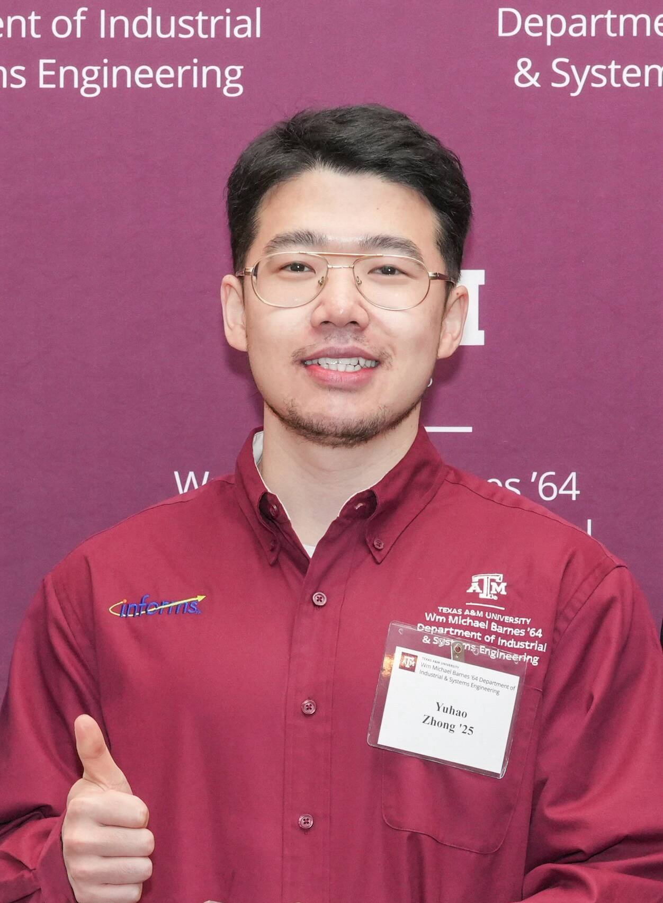

|  |
Yuhao ZhongPhD Candidate.Wm Michael Barnes '64 Department of Industrial and Systems Engineering Texas A&M University [hirobin_zhong@tamu.edu] [cv] |
My research focuses on advancing Data Science techniques to address fundamental challenges related to quality and performance assurance, as well as knowledge discovery, primarily in Manufacturing processes and systems in the context of Industry 4.0/5.0.
I am also interested in open-source NLP and deep learning, and develop projects to make deep learning systems safer, more clear, and easier to use. I work part-time at Hugging Face and like to release various software projects to support NLP and DL research.
My group's work has been recognized with an NSF CAREER Award and a Sloan Fellowship. We have won paper awards at conferences for NLP, Hardware, and Visualization, as well as awards for best demonstrations for open-source software.